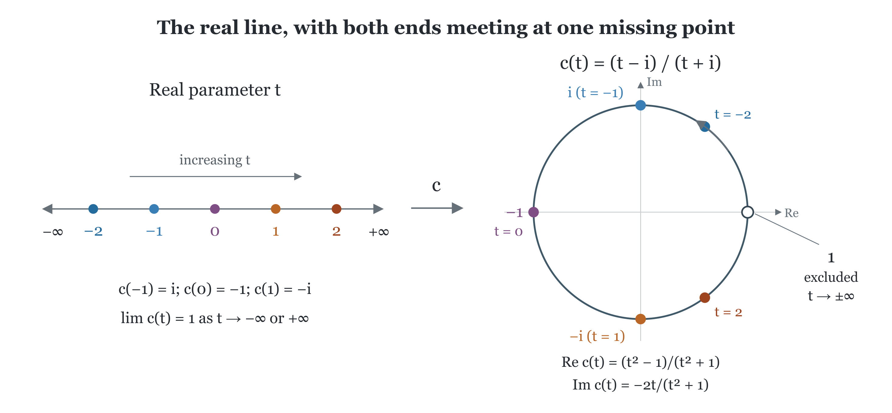

This post begins a series in which I collect several results around the notion of an observable, using it as an organizing principle for the theory of unbounded self-adjoint operators. An observable can be understood through the bounded functions applied to it. Starting with Hermitian matrices and random variables, I develop this viewpoint through spectral measures, resolvents and unitary groups, and see why strong resolvent convergence is a natural way to compare observables. The results are standard. The post is mostly an invitation to functional analysis for those who, like me, have struggled with the usual presentations of this subject.
October 23, 2026.
Detailed proofs and complements.
When I was a student, I was scared of the theory of unbounded self-adjoint operators.
Learning about them in Reed and Simon's book, with von Neumann's extension theory waiting around the corner, I felt that every calculation could conceal a domain problem. The notation looked like linear algebra, but even adding two self-adjoint operators required care: their domains might differ, and their sum on the intersection need not be self-adjoint. I felt functional analysis was not for me.
Every once in a while, a colleague would mention a similar uneasiness when first learning the theory. It was reassuring to discover that I was not alone.
As I worked with these operators, I began to notice recurring patterns in the proofs, especially when no pre-digested theorem was available. Often the useful object to construct was a resolvent family or a unitary group; the self-adjoint operator emerged afterwards. This was particularly clear when taking limits. Studying the operational approach to quantum mechanics and questions of convergence of non-commutative random variables, I started to wonder whether it would be clearer to introduce self-adjoint operators through their functional calculus from the outset.
The spectral analysis of matrices gives a familiar starting point. Bounded functions of the spectral values continue to make sense even when those values become arbitrarily large. Recovering the original, possibly unbounded operator is a further step. I will explain where that step imposes a condition on the vectors, and how the domain enters the construction.
The organizing object here is the observable. Its bounded functional calculus describes how to ask questions about its outcomes. Each bounded test gives an operator on the whole Hilbert space; the real coordinate itself may require a smaller domain. Calling an observable unbounded refers to this coordinate operator. The calculus of bounded tests still takes values in the algebra \(B (H)\) of bounded operators on \(H\).
I used this viewpoint in my 2018 quantum probability notes, Sheet 6, especially Section 1, and in the 2024 quantum mechanics notes, Note 2, Sections 4 and 7. In this post I want to develop the dictionary between bounded functions, spectral measures and self-adjoint coordinate operators, then explain why strong resolvent convergence is a natural way to compare real observables.
Familiarity with Hilbert spaces, bounded operators and measure theory should suffice. I have in mind students and readers who, like me, would welcome a firmer footing in the theory. The results are standard but this unortodox order of development makes more sense to me, and I hope it will help others too. The optional examples and remarks can be skipped on a first reading.
Contents.
Let \(M = M^{\ast}\) be a Hermitian matrix on \(\mathbb{C}^d\). The finite-dimensional spectral theorem gives distinct real eigenvalues \(\lambda_1, \ldots, \lambda_r\) and orthogonal projections \(P_j\) onto the corresponding eigenspaces, with
For any complex-valued function \(f\) defined at the eigenvalues of \(M\), set
This is the functional calculus of the matrix. It organises the family of spectral projectors in a coherent whole. Orthogonality of the projections gives
and the construction also preserves sums and scalar multiples of functions. Moreover,
I can therefore regard \(M\) as a rule for turning scalar functions into matrices, respecting their algebraic operations. Such a rule is called a \(\ast\)-homomorphism. The original matrix is recovered by choosing the coordinate function \(f (x) = x\).
Take a set \(B \subseteq \mathbb{R}\) and use its indicator function. Then
This projection keeps the components whose eigenvalues lie in \(B\) and removes the others. For a unit vector \(u\), the numbers \(\| P_j u \|^2\) are nonnegative and sum to one. They define a probability measure
I use inner products linear in the second argument. The last identity is simply the orthogonal decomposition of \(u\) written as an integral against a finite atomic measure.
In the quantum language it is the law of the observable \(M\) in the state \(u\).
Thus functions, projections and probability laws already describe the same object in the matrix setting.
Now replace \(\mathbb{C}^d\) by \(\ell^2 (\mathbb{N})\), the space of sequences \(u = (u_1, u_2, \ldots)\) with \(\sum_{n \geqslant 1} | u_n |^2 < \infty\), and take the spectral values \(1, 2, 3, \ldots\). For every bounded function \(f\) on the real line the same diagonal recipe gives
The output is still square summable, and the algebraic identities still hold. All the bounded questions about these spectral values are therefore represented by bounded operators on the whole space. The coordinate function \(f (x) = x\), however, is no longer bounded on the spectral values. I will return to it in Section 4. For now, the bounded calculus is already available, before deciding on which vectors that coordinate can act.
The matrix example suggests the description I want to keep:
A real observable is a consistent way of turning bounded functions on the real line into bounded operators on a Hilbert space.
Let \(H\) be a complex Hilbert space, with inner product linear in the second argument. I write \(B (H)\) for the algebra of everywhere defined bounded linear operators on \(H\). Write \(C_0 (\mathbb{R})\) for the complex continuous functions vanishing at infinity, with the supremum norm and involution \(f^{\ast} (x) = \overline{f (x)}\). The bounded continuous functions form \(C_b (\mathbb{R})\); the bounded Borel functions form \(B_b (\mathbb{R})\). These are different algebras.
The structure I want to retain is a linear map
I require it to preserve products and adjoints, just as in the matrix calculation:
These are the defining identities of a \(\ast\)-homomorphism. Such a map is automatically contractive:
Here is a short argument. Adjoin the constant functions and extend the map by \(\tilde{\Phi} (f + c) = \Phi (f) + c I\). It still preserves products and adjoints. Every nonnegative function in this enlarged algebra has its square root there, so its image is a positive operator. Apply this to \(M^2 - | f |^2\), where \(M = \| f \|_{\infty}\). This gives
which gives the claimed norm bound on applying it to each vector.
The constant function 1 does not belong to \(C_0 (\mathbb{R})\). I therefore cannot express normalization simply as \(\Phi (1) = I\) within this starting algebra. Instead I require nondegeneracy: the linear span of \(\Phi (C_0) H\) is dense in \(H\). Equivalently, for continuous compactly supported cutoffs \(0 \leqslant \chi_n \leqslant 1\) increasing to 1,
This is the analogue of mapping 1 to \(I\) when constants are absent: the cutoffs approximate 1, and their images must approximate the identity on every vector. Adjoining constants algebraically, as in the norm argument, does not itself ensure this condition.
Recall the relevant topologies on \(B (H)\). Strong convergence \(T_n \rightarrow T\) means \(T_n u \rightarrow T u\) in norm for each fixed \(u\); weak convergence means \(\langle u, T_n v \rangle \rightarrow \langle u, T v \rangle\) for all \(u, v\). Operator norm convergence is stronger: it requires uniform convergence over the unit ball. Thus the cutoff condition is strong convergence to \(I\) for \(\chi_n \nearrow 1\).
The distinction has a simple spectral meaning. For any one vector, a sufficiently large cutoff captures almost all its spectral mass. When spectral values extend arbitrarily far, as in the diagonal example, no single bounded spectral window captures every unit vector uniformly. Nondegeneracy asks for the first property, which is exactly what is needed to recover the whole Hilbert space from the bounded calculus.
In finite dimensions the cutoff values converge to one uniformly over the finite set of eigenvalues. In the sequence example, they approximate each fixed vector by controlling its square-summable tail. Nondegeneracy is the condition that no part of the Hilbert space is left invisible by the calculus.
I deliberately start with \(C_0 (\mathbb{R})\). Its functions are bounded, and positive functionals on this algebra have a direct measure-theoretic interpretation. The coordinate function \(x \mapsto x\) is absent. Recovering it, together with its proper domain, will be the outcome of the construction rather than an assumption at the outset. Before carrying out that construction, I will show how this language already describes familiar random variables through their bounded tests.
Let \(X : \Omega \rightarrow \mathbb{R}\) be a real random variable on a probability space \((\Omega, \mathbb{P})\), and put \(H = L^2 (\Omega, \mathbb{P})\). There is a direct way to turn each bounded Borel question \(f\) about the value of \(X\) into a bounded operator on \(H\): multiply a vector \(u\) by the answer \(f (X)\) at each outcome,
Composition \(f \mapsto f \circ X\) makes \(j_X\) a \(\ast\)-homomorphism: sums, products and complex conjugates of tests become the corresponding operations on their multiplication operators. In particular, its restriction to \(C_0 (\mathbb{R})\) is the observable of Section 2. Indeed, take continuous cutoffs \(0 \leqslant \chi_n \leqslant 1\) equal to one on larger and larger bounded intervals. Then \(\chi_n (X) u \rightarrow u\) in \(L^2\) for every \(u\), by dominated convergence. Every vector is therefore seen by the bounded tests.
Here the spectral measure can already be written down. For a Borel set \(B \subseteq \mathbb{R}\), the question “does \(X\) lie in \(B\)?” is answered by the projection
Hence \(\langle u, j_X (f) u \rangle = \int f \mathrm{d} \mu_u\). For the constant unit vector \(u = 1\), this is the familiar law \(\mu_1 = X_{\ast} \mathbb{P}\) and \(\langle 1, j_X (f) 1 \rangle =\mathbb{E} [f (X)]\). The formula uses inverse images of sets, not eigenspaces.
For a concrete example, take \(\Omega = (0, 1)\) with Lebesgue probability measure and \(X (t) = 1 / t\). The observable is \(j_X (f) u (t) = f (1 / t) u (t)\); its coordinate multiplication operator is
The vector \(1\) is not in this domain. Nor does \(A_X\) have an eigenvector: the inverse image of a single value of \(1 / t\) has measure zero. Nevertheless every bounded test \(f (X)\) acts on all of \(H\). The change of variables \(x = 1 / t\) gives, for every Borel set \(B\),
Thus its law has density \(x^{- 2} 1_{(1, \infty)} (x)\). The density jumps at \(x = 1\), but the law has no atoms and needs no list of eigenvalues. This is the concrete model for the general construction in Section 4: there I start only from an abstract homomorphism, recover its projections and vector laws, and then reconstruct the possibly unbounded coordinate with its domain.
The same construction works when the possible values are not numbers. Let \(M\) be a second-countable Hausdorff manifold and \(X : \Omega \rightarrow M\) a measurable map. Pullback gives a unital \(\ast\)-homomorphism
Thus the random point is described by all its bounded scalar tests. No chart, embedding or preferred coordinate is needed. On \(L^2 (\Omega, \mathbb{P})\), its restriction to \(C_0 (M)\) is nondegenerate: compactly supported cutoffs \(\chi_n \uparrow 1\) satisfy \(\chi_n (X) u \rightarrow u\) by dominated convergence. If \(M\) is compact, simply use the unital algebra \(C (M)\).
The expectation functional gives the law
This is a Borel probability measure on \(M\), and hence a Radon measure: its mass can be approximated from within by compact sets. Section 4 will recall the Riesz–Markov theorem, which recovers such measures from their integrals against continuous tests. The homomorphism records more than the law: a countable family of continuous functions separating points of \(M\) shows that it determines \(X\) up to almost sure equality. Expectation retains only its distribution.
For example, a circle-valued random variable is encoded by the unitary multiplication operator \(Z u = X u\). Polynomials in \(z\) and \(\bar{z}\) are dense in \(C (S^1)\), so \(Z\) determines the whole pullback calculus. A real angle requires a choice of branch; the circle also has a group law, which supplies an operation on circle-valued variables. A general manifold has no intrinsic sum of two random points, whereas their pullback homomorphisms always make sense. This viewpoint is useful even before unboundedness or noncommutativity enters the discussion.
The possible values may carry further structure: a group law for orientations, a metric for positions, or a symplectic form for a phase space. Pullback still describes the random outcome, but these extra structures raise additional questions about composition, distance or dynamics. In particular, a random point in a classical phase space does not by itself describe quantum position and momentum.
These examples give the abstract definition a concrete purpose: a calculus records how all bounded questions about an observable are answered. In classical probability, this means taking expectations; in the matrix example, it means pairing the resulting operators with a unit vector. I will next construct the spectral measure behind these scalar laws and recover the unbounded coordinate.
The Riesz–Markov theorem turns positive functionals into measures:
Riesz–Markov representation theorem, on the real line. Every bounded positive linear functional \(\ell : C_0 (\mathbb{R}) \rightarrow \mathbb{C}\) has a unique finite positive Radon measure \(\mu\) such that
Conversely, integration against any such measure gives a bounded positive functional. Here Radon means that Borel sets can be approximated in measure from inside by compact sets and from outside by open sets.
Proof idea. For open \(O\), define its mass by testing continuous compactly supported functions below its indicator:
Outer approximation extends this to a measure; positivity and continuous cutoffs give countable additivity and regularity. Approximation first proves the integral identity on \(C_c\), then on \(C_0\). Cutoffs increasing to 1 recover the total mass and norm. See e.g. Carlen, Section 7.2.
For a matrix, eigenspace projections gave the scalar laws. In the multiplication example of Section 3, inverse images under \(X\) gave both the projections and the laws, without eigenvectors. For an abstract calculus neither description is initially available: I obtain the vector laws first and then recover the projections. Given \(u \in H\), consider
This is a bounded positive linear functional on \(C_0 (\mathbb{R})\). Positivity follows because a nonnegative \(f\) has a square root in this same algebra and \(\ell_u (f) = \left\| \Phi \left( \sqrt{f} \right) u \right\|^2\). Riesz–Markov therefore gives a finite positive Radon measure \(\mu_u\) on \(\mathbb{R}\) such that
Nondegeneracy gives \(\mu_u (\mathbb{R}) = \| u \|^2\) by applying this identity to the cutoffs. Polarization gives complex measures \(\mu_{u, v}\) representing \(\langle u, \Phi (f) v \rangle\). For each Borel set \(B\), positivity gives
Thus this is a bounded sesquilinear form, represented by an operator \(E (B)\) through
Multiplicativity is the crucial extra ingredient. Extending the identity for products from continuous functions by a bounded monotone-class argument gives \(E (B) E (C) = E (B \cap C)\). In particular these operators are orthogonal projections: each set specifies a yes-or-no spectral question. Countable additivity holds strongly, and \(E (\mathbb{R}) = I\). This is the projection-valued spectral measure.
For a unit vector \(u\), the number \(\mu_u (B) = \langle u, E (B) u \rangle\) is the probability of a measurement result in \(B\). The projection \(E (B)\) describes the event independently of the chosen vector. Passing from scalar laws to projections retains precisely this common observable behind all the different states.
Now define, for every bounded Borel function,
Dominated convergence has a particularly useful operator form:
if \(f_n \rightarrow f\) pointwise and the functions are uniformly bounded.
In the matrix case, the coordinate function could be applied to every vector because there were only finitely many eigenvalues. Return now to the diagonal calculus with spectral values \(1, 2, 3, \ldots\). The proposed coordinate action is
This formula need not produce a vector in the Hilbert space. The sequence \(u_n = 1 / n\) is square summable, but its proposed image \((1, 1, 1, \ldots)\) is not. It is therefore necessary to specify the vectors for which the output remains square summable:
This is the domain of \(N\). It contains all finite sequences, so it is dense, but it is not the whole space. The operator is unbounded: on the unit coordinate vectors \(e_n\), its output has norm \(n\), so there is no constant bounding the output norm by the input norm. Both facts can be read directly from the diagonal formula; neither is a peculiarity of differential operators or boundary conditions.
The same issue occurs for a continuous range of spectral values. On \(L^2 (\mathbb{R})\), let \(\Phi (f)\) multiply by \(f\). Then \(E (B)\) multiplies by \(1_B\) and \(\mu_u (\mathrm{d} x) = | u (x) |^2 \mathrm{d} x\). Multiplication by the coordinate \(x\) is defined precisely when \(x u \in L^2\). In either example, the squared spectral value must be integrable against the vector's spectral measure. This gives the general rule:
The integral means the norm limit of its bounded spectral truncations. The integrability condition says exactly when these truncations converge. Since \(E ([- n, n]) u \rightarrow u\), the domain is dense. I have now obtained an operator together with its domain from the bounded calculus.
For a matrix, being Hermitian is just the equality with its conjugate transpose. With a proper domain, the same idea has an additional question: does the adjoint act on exactly the same vectors? I can now state the definitions with that question in view.
A densely defined operator consists of both a linear subspace \(D (A) \subseteq H\) and a linear map \(A : D (A) \rightarrow H\). It is symmetric if \(A \subseteq A^{\ast}\), and self-adjoint if \(A = A^{\ast}\), including equality of domains. The second condition is substantially stronger. To define the adjoint, ask whether a given \(v \in H\) admits a vector \(w \in H\) such that \(\langle A u, v \rangle = \langle u, w \rangle\) for every \(u \in D (A)\). If it does, then \(v \in D (A^{\ast})\) and \(A^{\ast} v = w\). Density of \(D (A)\) makes \(w\) unique. Symmetry says that this construction agrees with \(A\) on its original domain; self-adjointness says that the adjoint has no additional vectors in its domain.
An operator is closed if its graph is closed in \(H \oplus H\): whenever \(u_n \rightarrow u\) and \(A u_n \rightarrow v\), then \(u \in D (A)\) and \(A u = v\). It is closable if the closure of its graph is again an operator graph. Every symmetric operator is closable; it is essentially self-adjoint when that closure is self-adjoint. These distinctions will recur in the examples.
Theorem 1 (the observable form of the spectral theorem). Self-adjoint operators on \(H\) are in one-to-one correspondence with nondegenerate \(\ast\)-homomorphisms \(\Phi : C_0 (\mathbb{R}) \rightarrow B (H)\). Each such homomorphism has a unique extension to a unital Borel functional calculus which takes uniformly bounded, pointwise convergent sequences to strongly convergent sequences of operators.
Why the construction gives a self-adjoint operator. The spectral integral above is symmetric and closed. Its inverses at nonreal points are the bounded operators \(\Phi ((x - z)^{- 1})\); their ranges lie in \(D (A)\) and solve \((A - z) v = u\). Surjectivity at both \(z = i\) and \(z = - i\) proves self-adjointness. This also proves uniqueness: the calculus determines both the action and its domain.
For the reverse direction, starting with a self-adjoint operator, one can form the bounded unitary \(V = I - 2 i (A +\operatorname{iI})^{- 1}\). The resolvent identities verify unitarity, and injectivity of the resolvent gives \(\ker (I - V) = \{ 0 \}\). The bounded normal spectral theorem gives its circle-valued spectral measure; pulling it back by the inverse Cayley map gives the real spectral measure and recovers the original domain. The Cayley transform in Section 7 makes that route explicit. The two constructions are inverse. I can now write \(\Phi = \Phi_A\) and \(\Phi (f) = f (A)\). I have recovered the unbounded operator without treating its domain as an arbitrary extra choice.
The homomorphism need not be injective. Its kernel consists of the continuous functions vanishing on the spectrum of the corresponding operator. Thus the location of the spectrum is part of the data. This is already visible for a matrix: functions agreeing at all its eigenvalues give the same matrix under the calculus.
Remark on bounded operators. The same theorem includes bounded self-adjoint operators: these are exactly the ones whose spectral measure is supported in a compact interval. In that case the coordinate function is bounded on the spectrum, and its calculus acts on all vectors. The difference between bounded and unbounded operators therefore remains visible inside the same description.
The same rule for other unbounded functions. If \(g : \mathbb{R} \rightarrow \mathbb{R}\) is Borel, its spectral integral defines a self-adjoint \(g (A)\) on
Thus powers and square roots of positive operators follow the same pattern. Their domains record the integrability of the chosen function, rather than a new set of rules for each construction.
A large domain is often described through a smaller space of convenient vectors. For a closed operator \(A\), a linear subspace \(D_0 \subseteq D (A)\) is a core if the closure of the restriction \(A |_{D_0}\) is \(A\). Equivalently, \(D_0\) is dense in \(D (A)\) for the graph norm
Thus every \(u \in D (A)\) must admit \(u_n \in D_0\) with both \(u_n \rightarrow u\) and \(A u_n \rightarrow A u\). Density in \(H\) alone says nothing about the second convergence. On a core, the action of a closed operator determines its entire graph, hence the operator itself.
Core criterion. If \(A\) is self-adjoint, then \(D_0\) is a core precisely when \((A - z) D_0\) is dense in \(H\), for one (and hence every) nonreal \(z\). Indeed \(A - z\) is an isomorphism from its graph-norm domain onto \(H\), with inverse the bounded resolvent. Equivalently, the symmetric restriction to \(D_0\) is essentially self-adjoint and its closure is \(A\).
The functional calculus supplies a canonical example:
This is a core for \(A\). To see it, fix \(u \in D (A)\) and put \(u_n = E ([- n, n]) u\). Both errors tend to zero because
The assumption \(u \in D (A)\) is essential: it makes the displayed second moment finite. For an arbitrary vector in \(H\), the same cutoffs approximate the vector in norm, but no limit \(\operatorname{Au}\) is asserted.
Spectral truncation therefore controls the vector and the action at once.
Smooth compactly supported functions require a separate argument: they are not automatically an operator core. For the momentum operators on \((0, 1)\) with boundary condition \(u (1) = e^{i \theta} u (0)\), \(C_c^{\infty} (0, 1)\) is dense in \(L^2 (0, 1)\) but its graph closure imposes zero boundary values at both endpoints. It is not a core for any of those self-adjoint extensions.
There is also a weaker notion of form core. For \(A \geqslant 0\), this means density in \(D (A^{1 / 2})\) for the norm \(\sqrt{\| u \|^2 + \| A^{1 / 2} u \|^2}\). For the Dirichlet Laplacian on \((0, 1)\), \(C_c^{\infty} (0, 1)\) is a form core in \(H_0^1 (0, 1)\), but not an operator core in \(H^2 (0, 1) \cap H_0^1 (0, 1)\): graph limits of these test functions also have zero first derivative at the endpoints.
Here \(H^k\) denotes the Sobolev space with square-integrable weak derivatives through order \(k\). On an interval, \(H_0^1\) is the subspace of \(H^1\) with zero endpoint values. The form norm controls one derivative in this example, while the operator graph norm controls two. This is why the two completions retain different boundary data.
Regularity, total mass and countable additivity play different roles. Riesz–Markov already makes the scalar measures obtained from \(C_0\) Radon. Nondegeneracy gives them the full mass prescribed by the vector norm. Starting instead with bounded Borel functions requires imposing a continuity condition to exclude merely finitely additive data. The choice of starting algebra determines which of these properties still needs to be checked.
A convenient precise requirement on a unital Borel \(\ast\)-homomorphism is
This implies countable additivity of the scalar measures. On the real line finite Borel measures are Radon. In fact the displayed weak convergence improves to strong convergence: apply the same requirement to \(| f_n - f |^2\) and use multiplicativity. Starting with a nondegenerate representation of \(C_0\) builds all of this in automatically; its extension to \(C_b\) is also unique.
An ordinary limit already shows the issue, provided the limit is taken only on a suitable class of functions. Let \(\mathcal{A}_+\) be the algebra of bounded Borel functions on \(\mathbb{R}\) that have a limit at \(+ \infty\), and set
Ordinary limits preserve sums, products and complex conjugates, so \(L\) is a unital \(\ast\)-homomorphism. It vanishes on \(C_0 (\mathbb{R})\), but \(L (1) = 1\). It cannot be integration against a probability measure on \(\mathbb{R}\): for every fixed \(n\), \(\chi_n = 1_{[- n, n]}\) belongs to \(\mathcal{A}_+\) and has \(L (\chi_n) = 0\), although \(\chi_n \uparrow 1\). A probability measure would give integrals increasing to one.
There are two limits here, and their order matters. First send \(x\) to infinity with the interval fixed: eventually the point \(x\) lies outside it. Increasing the interval afterwards still gives zero. This is the simplest picture of mass escaping to infinity. The functional is defined on \(\mathcal{A}_+\), not on all bounded Borel functions; assigning zero whenever a limit fails to exist would destroy linearity. The example already shows why preserving algebraic operations and the constant one does not by itself guarantee the continuity required of an observable.
Describing an observable by all its bounded tests looks like a great deal of data. Fortunately, a much smaller family often determines the whole observable. Resolvents are well suited to equations and estimates, while unitary groups describe evolution and Fourier transforms of laws. The way they determine the calculus matters: uniform approximation, bounded pointwise limits and Fourier reconstruction are different mechanisms. Section 8 will use these descriptions to explain convergence of observables.
Fix the sign convention
Theorem 2 (resolvent coordinates). A self-adjoint operator is uniquely determined by \(R_A (z)\) at any one nonreal point. The \(\ast\)-algebra generated by \(r_z\) is uniformly dense in \(C_0 (\mathbb{R})\). Here the intended algebra is the nonunital algebra, including complex conjugates.
Proof sketch. The function \(r_z\) separates real points and never vanishes, so the locally compact Stone–Weierstrass theorem applies. More directly, set \(D (A) =\operatorname{Ran}R_A (z)\) and \(A = z I + R_A (z)^{- 1}\) on this range. The inverse is usually unbounded; forgetting the range would forget the domain.
The familiar identities are identities between bounded operators:
Also \(\| R_A (z) \| \leqslant | \operatorname{Im}z |^{- 1}\). Conversely, a densely defined symmetric operator is self-adjoint precisely when both \(A - i I\) and \(A + i I\) are onto. The estimate \(\| (A - z) u \| \geqslant | \operatorname{Im}z | \| u \|\) and the identity \(\operatorname{Ran} (A - z)^{\perp} = \ker (A^{\ast} - \bar{z})\) explain why.
Resolvents also recover the underlying measures directly. For a unit vector \(u\), the scalar resolvent is a Cauchy transform:
More generally, write \(m_{\mu}\) for this transform of any finite positive measure \(\mu\). It is holomorphic on the upper half-plane, with nonnegative imaginary part. No moments are needed. Invertibility here means that the transform determines the measure, as the following formula makes precise.
Stieltjes inversion. The map \(\mu \mapsto m_{\mu}\) is injective. The measure is the weak limit, as \(\varepsilon \downarrow 0\), of the measures with densities
Proof sketch. The last expression convolves \(\mu\) with the Poisson kernel, an approximate identity of mass one. Fubini's theorem and bounded convergence give
These integrals determine the finite measure. Explicitly, for \(a < b\), integration of the kernel over \((a, b)\) tends to one inside the interval, zero outside and one half at each endpoint. Consequently
Atoms can be extracted directly:
Here the integrand is \(\varepsilon^2 / ((x - a)^2 + \varepsilon^2)\), which tends boundedly to \(1_{\{ a \}} (x)\). The almost-everywhere boundary limit \(\pi^{- 1} \operatorname{Im}m_{\mu} (s + i \varepsilon)\) gives the density of the absolutely continuous part. Reading only that density loses the singular part; weak inversion recovers the whole measure. Its total mass is also visible at infinity: \(- i y m_{\mu} (i y) \rightarrow \mu (\mathbb{R})\) as \(y \rightarrow + \infty\). See Bordenave, Lecture 3, Lemma 3.2.
This is inversion of a transform on measures. The scalar function \(z \mapsto m_{\mu} (z)\) need not itself have a compositional inverse. For example,
Thus even in the upper half-plane it may fail to be one-to-one. Its values throughout that half-plane determine the measure; by analytic uniqueness, values on a set with an accumulation point inside it suffice.
There is a further distinction between a law and an observable. Fix a unit vector \(u\). The function \(m_u\) determines its law \(\mu_u\), but it only sees the closed subspace generated by \(f (A) u\), \(f \in C_0 (\mathbb{R})\). For instance, replacing \(A\) by \(A \oplus B\) and \(u\) by \(u \oplus 0\) leaves this scalar transform unchanged, whatever the self-adjoint operator \(B\) on the extra space may be.
If that generated subspace is all of \(H\), \(u\) is called cyclic. The identity \(\langle f (A) u, g (A) u \rangle = \int \bar{f} g \mathrm{d} \mu_u\) then makes \(f (A) u \mapsto f\) an isometry, with functions identified modulo equality almost everywhere. Density on both sides extends it to a unitary from \(H\) to \(L^2 (\mu_u)\). Under this unitary, \(u\) becomes the constant function 1 and \(A\) becomes multiplication by \(x\) on its maximal spectral domain. Thus the law determines the cyclic pair \((A, u)\) up to unitary equivalence. Without a cyclic vector, the laws for all vectors, together with polarization, determine all matrix coefficients of the spectral projections and recover the full observable.
Theorem 3 (Stone). A weakly continuous one-parameter unitary group \((U (t))_{t \in \mathbb{R}}\) has a unique self-adjoint generator \(A\) with \(U (t) = e^{i t A}\). Conversely every self-adjoint \(A\) gives such a group. Its domain consists exactly of the vectors for which \((U (t) u - u) / t\) has a norm limit at zero; the limit is \(i A u\).
Proof sketch. Weak continuity is strong continuity here, since
The function \(t \mapsto \langle u, U (t) u \rangle\) is continuous and positive definite. Bochner's theorem makes it the Fourier transform of a unique finite positive measure of mass \(\| u \|^2\). Polarize, and construct the calculus first for functions of the form \(f (x) = \int g (t) e^{i t x} \mathrm{d} t\) with \(g \in L^1\) by \(\Phi (f) u = \int g (t) U (t) u \mathrm{d} t\). The group law gives multiplication, and the scalar measures give the supremum-norm estimate. Extend to \(C_0\) and use Theorem 1. Finally dominated convergence on vectors with finite second spectral moment gives the derivative; Fatou's lemma proves the converse domain implication.
The functions \(e^{i t x}\) are not in \(C_0\). They belong to the bounded extension of the calculus. Their finite linear combinations generate the almost periodic functions in uniform norm, not all of \(C_b\). It is continuity in the parameter and Fourier uniqueness which recover the full observable. One unitary \(e^{i A}\) alone does not determine \(A\): it loses the distinction between real numbers differing by \(2 \pi\).
This also explains why the derivative is recovered only at the end. Evolution is defined on every vector, whereas an infinitesimal velocity in the Hilbert-space norm exists only on the generator domain. Stone's theorem gives a precise connection between those two levels of description.
There is another particularly economical bounded coordinate. The Cayley transform
identifies the real line with the unit circle minus the point 1. It is a form of stereographic projection, and extends to a homeomorphism between the one-point compactification of \(\mathbb{R}\) and the circle. The Cauchy transform in Section 6 instead transforms a measure; the two constructions should not be confused, though both use the same resolvent functions.
Unlike a general scalar Cauchy transform, this map is a bijection of its stated spaces. Its inverse is the rational function
It takes real values on the punctured circle and diverges near 1. This is exactly where the unbounded coordinate is stored.

The Cayley transform \(c (t) = (t - i) / (t + i)\). Matching colours mark the same real parameter on both sides. As \(t\) increases, its image travels counterclockwise around the circle; both tails approach the excluded point 1.
Theorem 4 (Cayley correspondence). The map
is a bijection from self-adjoint operators to unitary operators \(V\) with \(\ker (I - V) = \{ 0 \}\). Its inverse is
Proof sketch. For a self-adjoint \(A\), the resolvent identities give \(V^{\ast} V = V V^{\ast} = I\), and the resolvent is injective. Conversely the bounded spectral theorem for the unitary \(V\) supplies a projection-valued measure on the circle. Its mass at 1 is zero precisely when \(\ker (I - V) = \{ 0 \}\). Pull this measure back to \(\mathbb{R}\) and apply the construction in Section 4. The inverse formula follows by elementary algebra on its stated domain.
Notice the distinction between \(1 \notin \sigma (V)\) and \(E_V (\{ 1 \}) = 0\). Only the latter is required. An unbounded \(A\) corresponds to a \(V\) whose spectrum accumulates at 1, without an eigenvector there. Its bounded transform has not removed the unboundedness; it has encoded it in how the spectral measure approaches the missing point.
In particular, having no eigenvector at 1 does not make \(I - V\) boundedly invertible. Its range is dense, but for unbounded \(A\) it is a proper subspace of \(H\). The inverse Cayley formula recovers exactly that subspace as the domain. The original domain issue has become a familiar question about the range of a bounded operator.
Once observables are the starting point, their convergence has a natural meaning. Fix a Hilbert space \(H\) and describe the observables by nondegenerate \(\ast\)-homomorphisms \(\Phi_n, \Phi : C_0 (\mathbb{R}) \rightarrow B (H)\). I ask that every bounded continuous test vanishing at infinity converge on every vector:
This is pointwise strong convergence of the homomorphisms. It compares observables through operations already defined on the whole Hilbert space. Their coordinate operators may have different domains, as happens when boundary conditions or potentials change. There is no need to identify a common domain before asking whether the observables converge.
The resolvents are a small family of these bounded tests, and they determine all the others. The theorem below says that the topology just described is exactly strong resolvent convergence of the associated self-adjoint operators. Thus the resolvent definition is an economical way to test convergence of observables, rather than an additional domain convention.
Theorem 5 (strong resolvent convergence). For self-adjoint \(A_n\) and a self-adjoint \(A\) on the same Hilbert space, the following are equivalent:
\(R_{A_n} (z) u \rightarrow R_A (z) u\) for every \(u \in H\), at one nonreal \(z\).
The same holds at every nonreal \(z\).
\(f (A_n) u \rightarrow f (A) u\) for every \(f \in C_0 (\mathbb{R})\) and \(u \in H\).
\(e^{i t A_n} u \rightarrow e^{i t A} u\) for every real \(t\) and every \(u \in H\).
For every unit vector \(u\), the spectral probability laws \(\mu_u^{A_n}\) converge weakly to \(\mu_u^A\), meaning convergence against every bounded continuous scalar function.
In this situation convergence also holds for every \(f \in C_b (\mathbb{R})\). In particular the unitary groups converge strongly, uniformly for \(t\) in compact intervals. If all operators are nonnegative, their heat semigroups \(e^{- tA_n}\) converge strongly to \(e^{- tA}\), uniformly on compact time intervals in \([0, \infty)\). In the Cayley description of Section 7, the same topology is simply strong convergence of \(V_n\) to the admissible unitary \(V\), since \(V = I - 2 iR_A (- i)\).
Proof sketch. At a fixed nonreal \(z\), adjoint resolvents converge weakly. They also converge strongly: normality gives \(\| R_{A_n} (\bar{z}) u \| = \| R_{A_n} (z) u \|\), so the norms converge to the norm of the weak limit. Products of uniformly bounded strongly convergent operators converge strongly. Stone–Weierstrass and contractivity now give the calculus on \(C_0\).
To pass to \(C_b\), choose a compactly supported cutoff \(\chi\) with \(\chi (A) u\) close to \(u\). The same is then true of \(\chi (A_n) u\) for large \(n\). Apply the \(C_0\) result to \(f \chi\) and bound the remaining tails. On this compact spectral set the exponential test functions form a norm-compact family for compact time intervals, which gives the uniform statements. For the converse from unitary groups to resolvents, use the norm-convergent vector integral
The scalar identity follows by integrating an exponential; the spectral theorem gives the operator identity. Dominated convergence now proves (4) implies (1). The equivalence with (5) is explained next; the companion proves all these statements.
In a unit vector state \(u\), the observable has outcome law \(\mu_u^A (B) = \langle u, E_A (B) u \rangle\). Its bounded continuous expectations are \(\int fd \mu_u^A = \langle u, f (A) u \rangle\). Strong convergence therefore implies weak convergence of these laws.
The converse explains why the strong topology is so natural here. Knowing the limiting laws for every vector state recovers all matrix coefficients by polarization, hence weak convergence of \(f (A_n) u\). The same laws also determine their squared norms, since multiplicativity gives
Weak convergence together with convergence of norms is strong convergence in a Hilbert space. This argument uses the algebraic structure of an observable. Convergence of the law in just one chosen state would not identify the observable's action on all vectors.
The Hilbert space is fixed throughout this statement. If spaces vary, one must first supply comparison maps or construct a limiting representation; convergence of laws alone is a different assertion.
For a concrete approximation, clip the spectral coordinate at height \(n\): set \(b_n (x) = \max (- n, \min (x, n))\) and \(A_n = b_n (A)\). Each \(A_n\) is a bounded self-adjoint operator on all of \(H\). For a bounded continuous test \(f\), the substitution rule gives
Indeed \(b_n (x) \rightarrow x\), and the integrand is bounded by \(4 \| f \|_{\infty}^2\). Dominated convergence proves convergence of the observables on every vector, even when \(Au\) itself is undefined. On \(D (A)\) one also has \(A_n u \rightarrow Au\), but that is an additional statement about the unbounded coordinate, not the definition of the limit.
Suppose \(D_0\) is a core for the self-adjoint operator \(A\), each \(A_n\) is self-adjoint, \(D_0 \subseteq D (A_n)\), and \(A_n u \rightarrow A u\) for every \(u \in D_0\). Then \(A_n\) converges to \(A\) in strong resolvent sense. Indeed, on the dense set of vectors \(f = (A - z) u\), \(u \in D_0\),
The uniform resolvent bound extends this convergence to all of \(H\). Agreement on a merely Hilbert-dense test space would not justify the density step: the graph-norm core is essential.
The specified self-adjoint limit is essential. For example, \(A_n = n I\) has resolvents converging even in norm to zero, but zero is not a resolvent on a nonzero Hilbert space. Mass has escaped to infinity; the limiting \(C_0\) representation is degenerate. In the Cayley picture the unitaries tend to \(I\), which fails \(\ker (I - V) = \{ 0 \}\). In either description, the limit of the bounded data must still satisfy the condition that makes it an observable.
Norm resolvent convergence gives norm convergence of \(f (A_n)\) for \(f \in C_0\), by the same algebra approximation argument. It does not generally give norm convergence for arbitrary bounded continuous \(f\). Nor does strong resolvent convergence give convergence of every spectral projection: discontinuities of indicator functions matter. Already \(A_n = n^{- 1} I \rightarrow 0\) fails for the projection of \((- \infty, 0]\). For an interval whose finite endpoints have zero limiting spectral projection, the corresponding spectral projections do converge strongly.
These equivalent convergence conditions do not imply convergence of unbounded moments. For an elementary example, on \(\ell^2 (\mathbb{N})\) let \(A_n = n^2 P_n\), where \(P_n\) projects onto the \(n\)-th coordinate. These converge in strong resolvent sense to zero. For the fixed vector with coordinates proportional to \(1 / n\), their first spectral moments stay strictly positive. Bounded tests and moment bounds are separate pieces of information. Small amounts of spectral mass can move to very large energies while becoming invisible to bounded tests. Moment estimates are what prevent those tails from contributing an uncontrolled amount to an unbounded quantity.
The distinction is useful in practice: convergence of observables ensures that bounded continuous questions have stable answers; estimates on spectral tails are needed for energies and other unbounded quantities. See Teschl, Section 6.6 for resolvent convergence and its spectral consequences.
This completes the basic description of a real observable, including how to approximate it and where its unbounded coordinate requires extra domain information.
M. Gubinelli, Quantum probability and quantum stochastic calculus (Bonn, 2018), Sheet 6, Section 1, pp. 1–6. The three descriptions of a quantum random variable, Fourier reconstruction, the generator domain, and the Cayley transform. See also Sheet 4, Section 2 and Sheet 5 for spin central limits, quasi-characteristic functions and the construction of the limiting Gaussian unitaries. Course page.
M. Gubinelli, Elements of Mathematical Quantum Mechanics (2024), Note 2, Section 4, pp. 9–11, and Section 7, pp. 23–33; Lecture 5, pp. 5–8 and Lecture 7. Homomorphisms as observables, Bochner and Bernstein reconstruction, and positive-energy evolution. Course page.
M. Reed and B. Simon, Methods of Modern Mathematical Physics, I: Functional Analysis, revised and enlarged edition, Academic Press, 1980, especially Chapters VII–VIII. Publisher. A systematic account of spectral theory and unbounded operators.
G. Teschl, Mathematical Methods in Quantum Mechanics: With Applications to Schrödinger Operators, second edition, Graduate Studies in Mathematics 157, AMS, 2014. Chapters 2–3, 6.1 and 6.6 cover domains, forms, extensions, the spectral theorem, perturbations and resolvent convergence. Author's book page and freely available text.
E. A. Carlen, Functional Analysis (2017), Section 7.2, especially Theorem 7.2.7 and Lemma 7.2.12. Author's notes. Riesz–Markov, regularity, and the finite-measure version for continuous functions vanishing at infinity.
C. Bordenave, Lecture notes on random matrix theory, 11 January 2019, Lecture 3, especially Lemma 3.2. Author's notes page. Cauchy–Stieltjes inversion, recovery of atoms, and weak convergence.